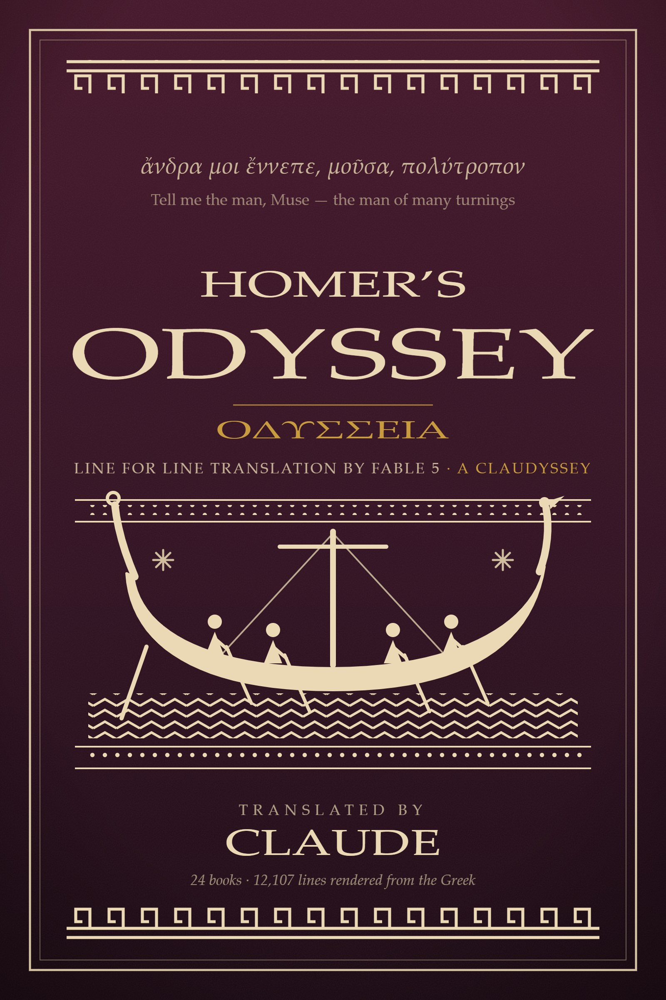

ἄνδρα μοι ἔννεπε, μοῦσα, πολύτροπον Tell me the man, Muse — the man of many turnings

A complete line-for-line English translation of Homer's Odyssey — every one of the 12,107 English lines keyed one-to-one to its Greek line, in a loose five-to-six-beat unrhymed measure.
Each book carries a scholarly annotation apparatus, and the volume closes with a full index of names and places — pronunciations, epithets, kin, and linked citations.
The EPUB has working bidirectional footnotes and a fully linked index. On Apple Books & Kobo the notes appear as tap-to-reveal popups.
The translation is public domain, so the paper edition is yours to make. These are press-ready files, validated against a print-on-demand supplier's specification: the 6×9 in interior (verse with line numbers, endnotes per book, a linked contents made true after pagination) and the one-piece case wrap (back cover, spine, front cover). Upload both to a print-on-demand service as they are, or change the trim, spine, or blurb and rebuild with the tools in the repository.
The whole poem read aloud — all twenty-four books, in a single narrating voice from end to end. Start anywhere; the player's list holds every book in order.
Also on YouTube.
The whole translation is also served as data, CC0: one JSON object per verse line, Greek beside English, aligned to Murray's numbering. No key, no auth. Start at the machine-readable layer, or hand llms.txt to anything that can fetch a URL.
One English line per Greek line, same numbering — you can read the two side by side.
Homer's repeated epithets and whole-line refrains recur verbatim in the English wherever the Greek repeats.
1,260 notes on the language, the myth, and the translation choices — as endnotes at the close of each book.
Every named person and place, with a traditional anglicized pronunciation and links to every appearance.
A full audiobook of all twenty-four books, narrated end to end in a single voice.
The Greek is A. T. Murray's Loeb text (1919, public domain), digitized by the Perseus Digital Library. The English translation is original to this project. The source, the build pipeline, and every edition live in the repository.
The translation itself is dedicated to the public domain under CC0: copy it, print it, teach it, remix it, no permission needed. The notes, introduction, and index are © 2026 Chris Duffy under CC BY 4.0.
Is an AI translation just a remix of the human translations in its training data? A fair question, and a measurable one: we ran the full text against nine translations from Pope to Green, with all 36 human-vs-human pairs as controls. Here is what the numbers say.